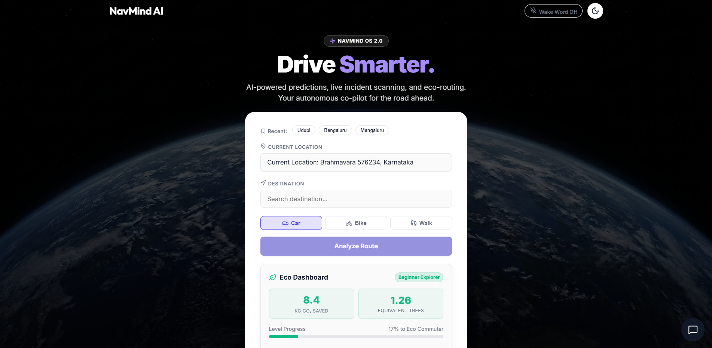
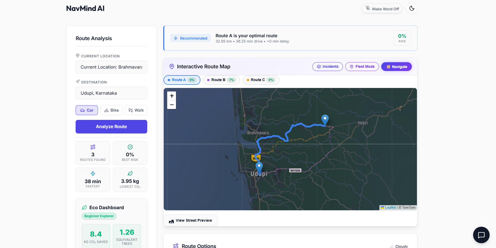
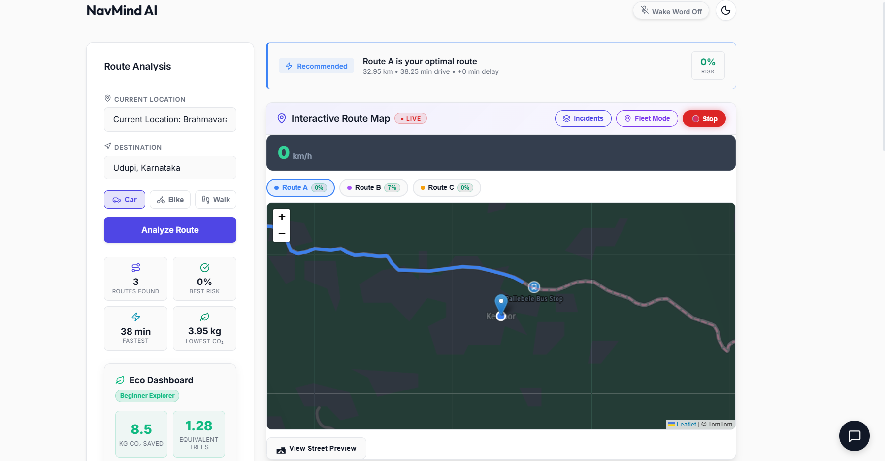
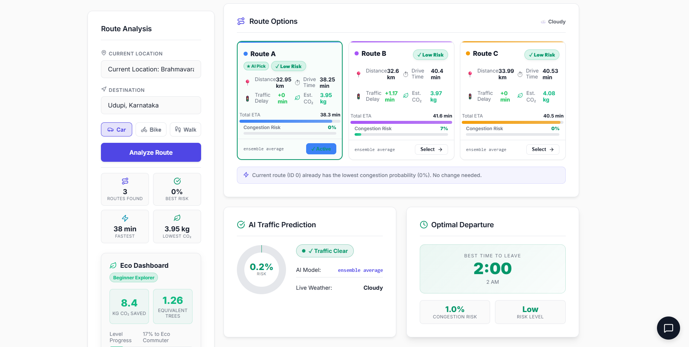
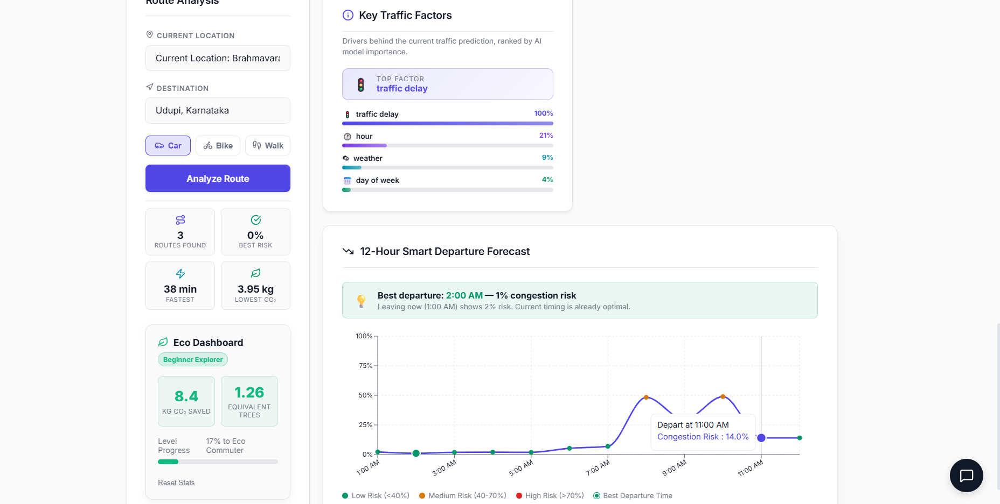
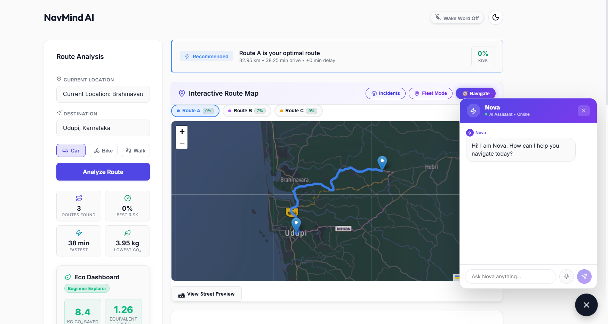

Smart Traffic Intelligence Platform
An AI-powered real-time traffic analysis, route optimization, and predictive congestion forecasting system using Scikit-learn ensembles, TomTom APIs, and Explainable AI (XAI) powered by Google Gemini.
Urban traffic congestion causes huge delays, fuel wastage, and massive travel uncertainties. While systems like Google Maps react to congestion, they lack predictive foresight.
NavMind AI solves this by predicting traffic flows before they build up. By analyzing historical databases, weather trends, active incidents, and live TomTom data streams, the ML models forecast congestion levels over a 12-hour window. This allows travelers to plan departures dynamically and take optimal paths.
NavMind AI combines classical routing algorithms with ensemble classifiers and LLMs to create a transparent, predictive navigation layer.
| Feature | 🗺️ Standard Routing Systems | 🧠 NavMind AI |
|---|---|---|
| Congestion Insight | Reactive (spots traffic after it accumulates) | Predictive (forecasts congestion 12 hours ahead) |
| Environmental Context | ❌ Ignores rain, wind, and visibility indexes | ✅ Intersects real-time weather radar data |
| AI Interpretability (XAI) | ❌ Black box algorithms with zero explanation | ✅ Gemini AI outputs explanations for route choices |
| Interaction Mode | ⌨️ Manual typing and touchscreen inputs only | 🎙️ Hands-free continuous-listening voice agent |
Ensemble models classify street conditions into light, moderate, or heavy bottlenecks.
TomTom & OpenRouteService route profiles tailored for cars, bikes, or pedestrians.
A 12-hour forecasting chart detailing the absolute best time to leave to avoid traffic.
Google Gemini integration outputs plain-language explanations of route choices and risks.
Pulls meteorological variables via OpenWeather API to estimate rain impact on vehicle speeds.
Continuous-listening voice agent coordinates destination inputs and answers queries hands-free.
Visualizes collisions, constructions, and hazards on interactive map sheets.
Estimates and displays CO2 emissions for each path, guiding eco-friendly route profiles.
Visualizing the flow of data from the React front-end down to external routing APIs and ML prediction models.
Steps to ingest, train, and select traffic prediction models within the backend pipeline.
Edit .env file and configure GOOGLE_MAPS_API_KEY, OPENWEATHER_API_KEY,
ORS_API_KEY, TOMTOM_API_KEY, and GEMINI_API_KEY.
Server will run at http://localhost:8000 and Frontend will run at
http://localhost:5173.
Screenshots of NavMind AI's live interfaces showcasing route recommendations, predictions, forecasts, and chat agents.






TomTom traffic integrations, weather overlays, and scikit-learn models pre-training configurations.
Dijkstra route optimizations via OpenRouteService and React Leaflet map tiles setup.
Google Gemini AI route explanations and speech recognition voice assistant integration (Done).
Integrating advanced LSTM deep learning models for sequence traffic predictions (In progress).
Compiling cross-platform mobile views using React Native for live GPS updates.
City-wide telemetry analytics for traffic engineering departments and route profile distributions.
Constructing predictive routing systems requires processing highly asynchronous and rate-limited web feeds.
Challenge: API Rate Limits and Latency
TomTom and OpenRouteService APIs have strict monthly query caps and can slow down under high load.
The Learning: We implemented a local redis-style server cache to store route calculations and weather conditions for popular coordinates (expiring every 5 minutes). Additionally, we trained localized offline RandomForest models to generate speed predictions locally when APIs hit limits, ensuring seamless routing.
NavMind AI successfully demonstrates how multi-modal data streams can guide transportation routing dynamically.
Explore the source code on GitHub, review API documentations, or reach out to discuss intelligent routing.